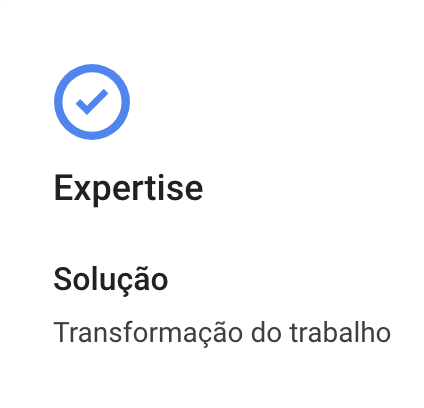
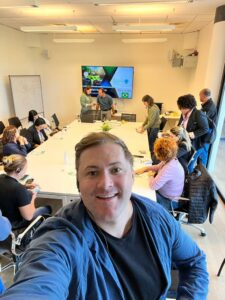
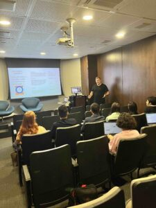

Os desafios dos últimos tempos, obrigaram negócios a se reinventarem. Com o aumento da competitividade, desafios do cenário atual e ainda a LGPD em vigor ,empresas de qualquer tamanho perceberam a necessidade de contar com um agente de transformação ou ainda de manutenção da sua operação.

Na Guinux nossos clientes contam com especialistas em transformação do trabalho, aumento de produtividade e colaboração. (Temos o selo oficial Work Transformation do Google Cloud).
A Guinux tem desempenhado um papel cada vez mais importante no mundo empresarial, tornando-se um agente de transformação e manutenção para negócios de todos os portes e setores. Nossos

clientes incorporam soluções tecnológicas em suas operações e estão mais bem preparadas para enfrentar os desafios do mercado e garantir o crescimento e a sustentabilidade de seus negócios.A seguir, exploramos algumas das maneiras pelas quais a TI atua como agente de transformação e manutenção do seu negócio:
- Otimização de processos: A TI permite a automação e a otimização de processos empresariais, resultando em maior eficiência e redução de custos. Por exemplo, a implementação de sistemas de gerenciamento de projetos e recursos pode ajudar a melhorar a colaboração entre equipes, enquanto a automação de tarefas repetitivas libera tempo e recursos humanos para atividades mais estratégicas e de maior valor agregado.
- Inovação e diferenciação: A adoção de tecnologias emergentes, como Inteligência Artificial, Internet das Coisas e Big Data, pode proporcionar oportunidades de inovação e diferenciação no mercado. Essas tecnologias ajudam a desenvolver novos produtos e serviços, melhorar a experiência do cliente e criar vantagens competitivas, permitindo que seu negócio se destaque em seu setor.

Tomada de decisões baseada em dados: A Guinux oferece ferramentas e soluções que facilitam a coleta, o armazenamento e a análise de dados. Essas informações são valiosas para a tomada de decisões mais informadas e estratégicas, ajudando a identificar tendências, prever demandas e otimizar recursos.- Segurança e proteção de dados: Com o aumento da quantidade de dados gerados e armazenados pelas empresas, a segurança e a proteção dessas informações são cruciais. A Guinux atua na implementação de sistemas e políticas de segurança que protegem a infraestrutura de TI e os dados do negócio, garantindo a conformidade com regulamentações e a manutenção da reputação da empresa.
- Adaptação às mudanças no mercado: Com a Guinux o seu negócio se adapta às mudanças no mercado e às demandas dos consumidores de forma mais ágil e eficiente. A implementação de soluções de TI escaláveis e flexíveis, como serviços baseados em nuvem, facilita a adaptação às mudanças e o crescimento do negócio conforme as necessidades evoluem.
- Suporte ao trabalho remoto e colaboração: A TI possibilita a implementação de sistemas e ferramentas que facilitam o trabalho remoto e a colaboração entre equipes, independentemente de sua localização geográfica utilizando o Google Workspace. Isso permite que a sua empresa aproveite talentos globais e melhorem a produtividade, enquanto oferecem maior flexibilidade aos funcionários.
São mais de 50 empresas que contam com o nosso papel de transformação e sustentação, através da nosso novo modelo de TI, Gestão, Help Desk e inovação contínua.
Agende uma conversa com o nosso especialista.